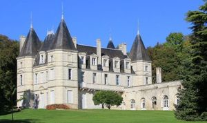
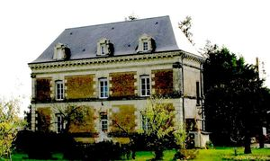
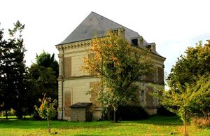

Recensement Jean-Claude Truffet
| Département | 86 — Vienne |
| Canton | Chatellerault |
| Commune | Thurey |
| Type d'édifice | Château |
| Période d'origine | XV-XVII-XIX |



A quelques kilomètres au nord-ouest ouest à Sossais le chäteau de Bouchet. BARBELINIERE, le fief de la Barbelinière dépendait de la baronnie de Thuré. Jean de Marconnay fortifie le château à la fin du XVe siècle. C'est l'architecte Lubac qui remanie l'édifice sous le Second Empire en lui donnant des allures Renaissance. Au XVIIe siècle, le seigneur est Pierre Certany, écuyer et officier de finance. A la fin du XVIIIe siècle, Joseph Cadet devient propriétaire ; il est l'ancien munitionnaire du Roi à Montréal. Il achète la propriété en 1766. Le pigeonnier date du XVIIe siècle et semble avoir connu quelques remaniements, cependant ses boulins sont conservés. A l'intérieur, sur une pierre qui semble être un remploi, est gravée la date : 1515. L'orangerie et la chapelle pourraient dater du XVIIIe siècle. Le logis actuel a conservé des murs d'origine mais il a été agrandi et ses élévations ont été reconstruites au XIXe siècle. Les arbres permettent de dater le parc du XIXe siècle.Château surplombant la commune de Thuré. Il est situé dans un parc où se trouvent un pigeonnier, une maison de gardien et un corps de ferme de plan en L. Le château se prolonge, sur sa façade nord est, par une orangerie et une chapelle. Les pavés de l'orangerie proviendraient de cales de navires et auraient servi à lester des bateaux. Les quatre tours d'angles sont plus élevées que la toiture du logis. Une cheminée d'influence italienne, classée MH, est située au rez-de-chaussée, dans la partie nord-ouest du château.
BOUCHET, dans son parc paysager, Le Bouchet offre une belle unité dont on doit probablement attribuer sa construction à la famille Champigny Dupont au XIXe siècle. L'édifice présente un plan rectangulaire, cantonné à deux angles de tours polygonales en appareillage de brique et de pierre de taille. Il est couvert d'un toit en croupe en ardoise. La travée centrale comprend la porte d'entrée à décor sculpté et forme un avant-corps légèrement en saillie. Elle est surmontée d'un fronton triangulaire sculpté se terminant par une lucarne. De part et d'autre s'ouvrent deux travées de baies jumelées sur 2 niveaux séparés par un bandeau de pierre, chacune de ces travées étant surmontée d'une lucarne sur toit à fronton triangulaire GENAURAYE Le terme Genauraye aurait ainsi évolué par la Genouroie en 1437 qui relevait du duché de Châtellerault; en 1483, la Genouraye ; en 1576, la Genoraye relevant de la cure de Thuré ; en 1763, la Genaurais, fief relevant du duché de Châtellerault. Le terme Genauraye viendrait de Juniperetum (de junipereus, genévrier). Le château de La Genauraye, situé sur la commune de Thuré, appartenait au début du XIXe siècle à M. et Mme Borreau. En 1896, le domaine a été racheté par la famille Bedel (acte reçu à l'époque par Maître Pichon, notaire à Châtellerault). Demeure de l'écrivain Maurice Bedel (1883-1954), prix Goncourt en 1927.
Barbelinière; famille de Pierre Certany. Bouchet; famille Champigny Dupont. Genauraye; M. et Mme Borreau
"
Château de Barbelinière grav 1 de Bouchet grav 2-3